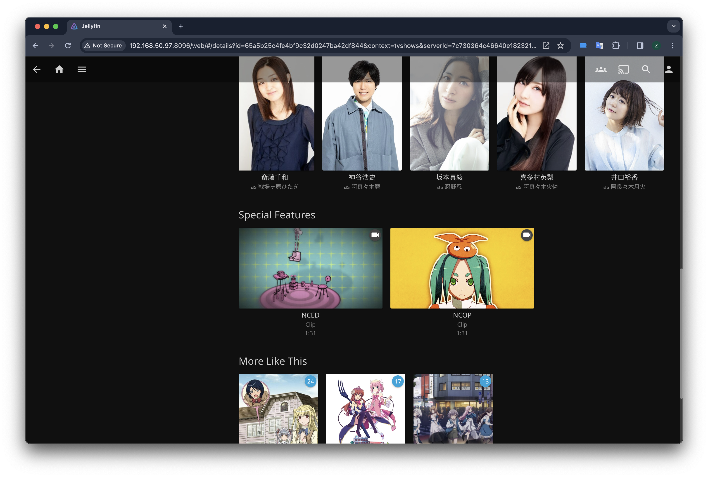
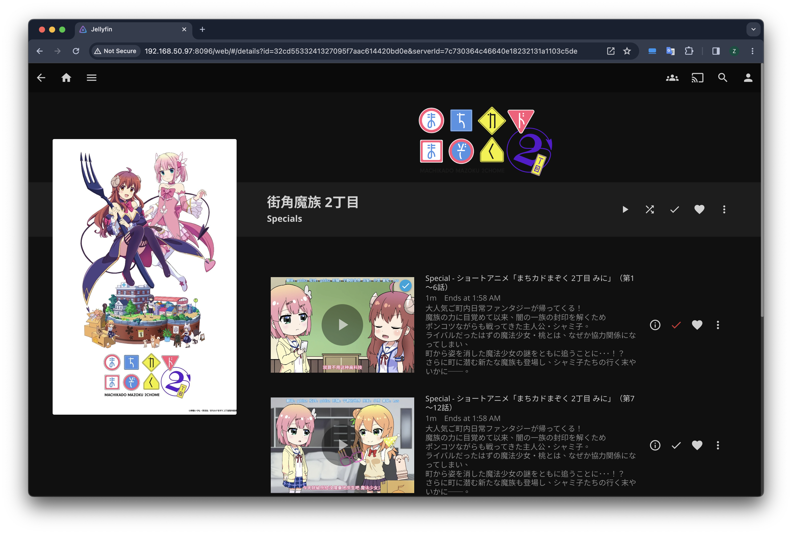

Jellyfin Naming Guide by Code
Overview
喜迎物语系列新作开播，准备整理一下自用Jellyfin的动漫资源库，顺便也阅读了Jellyfin和几个常用插件的相关源码以帮助我更好地整理这些影音文件。
Jellyfin推荐的媒体组织方式实际上反映了该软件的运作逻辑，尽管插件能拿到每个文件的完整路径，可以相当自由地匹配并组织元数据，但作为用户不能指望元数据插件为自己杂乱的文件组织兜底，尤其是配置了多个插件时。
动漫
Jellyfin基本上采用和TVDB相同的方式组织电视剧。动漫类内容很多时候并不能很好遵守其简单的电视剧集（Series）-> 季度（Season） -> 单集（Episode）的结构，单独发售的OVA/OAD，在季度完结后的SP以及总集篇甚至新作剧场版在TVDB中都会被一股脑放到第零季中，这些英文数据库也通常不会区分分割放送和时隔很多年放送的下一季，也不会为每个季度安排单独的名称，只会显示Season 1， Season 2等。 Bangumi是国内最大的动漫类内容数据库，它的编排方式就与前面所述的TVDB等有明显差异，在Bangumi里不同季度、OVA/OAD、剧场版等都都是单独的条目，都有单独的名称；SP和BD内的特典等都会被放在所属的动画季度内。
当然，TVDB的命名方式也是可行的，只是Bangumi的元数据大多数时候都更符合动漫爱好者的习惯。他们也都不完美：对一些细小的文件如OP/ED，PV等经常识别错误且很难纠正，以至于很长一段时间内我都不敢将这些文件导入媒体库，直到现在也还是用比较hack的方式强制让这些文件不匹配元数据。
Seasons & Episodes
Jellyfin的电视剧元数据分为三种，Series、Season和Episode。如果遵守其命名规范，在还没进行元数据匹配时就能通过文件名推断出季和集的序号，大部分metadata provider也会将依据这些序号拉取元数据。一些corner case：
- Bangumi插件将第一季的剧集匹配到了第二季：某些续集的episode序号并非从1开始，而是接着第一季的最后一集
extras
Jellyfin定义了一系列附加内容类型，如trailer、interview、behind the scenes。Jellyfin通过ExtraRule将这些文件夹标记为extras，他们不参与元数据匹配，在前端中会以特殊的UI展示。注意链接中的extra类型在10.9以上是全部支持的，在10.8.13中仅支持extras、featurette等少数几种。

TVDB，TMDB等会用第零季组织特殊内容，如特别节目、采访和bonus content等，通常不会包括较短的featurette或trailer。这些内容在Sonarr中会被按照TVDB的格式放在Season 0文件夹中。Jellyfin也适配这种组织方式，第零季（即episode的ParentIndexNumber == 0）的内容在UI上默认会显示为Specials，在配置媒体库时可以通过“Special season display name”选项对其设置。第三方插件如jellyfin-plugin-bangumi同样可以通过将任意单集的ParentIndexNumber设置为0的方式将其加入到Special季中。

到现在我们已经清楚Jellyfin组织附加内容的所有可能途径了：
将媒体加入到规定的附加内容文件夹中，
Jellyfin会将其作为special feature对待，有特殊的UI，不会匹配元数据，在第三方软件如Infuse中不会展示出来。将媒体加入Season 0文件夹，或根据特定的metadata provider的要求重新命名，让这些文件在扫描后能被识别为第零季内容，在
Jellyfin中就会显示到Specials文件夹里。这些内容会有元数据，也能被其他客户端支持。
动漫的附加内容一般有OP/ED、OVA/OAD、PV、小剧场、采访、总集篇等，且一般都是跟季度强相关的。和其他电视剧和电影的附加内容类似，这些内容并不保证一定有元数据。其实如何放置这些内容只取决于是否需要元数据，这也与Jellyfin提供给我们的两种方式，以及大部分元数据插件的工作方式吻合：
较短的内容如OP/ED、PV、BD menu甚至小剧场等都可以直接放在extras文件夹里，文件名就是Jellyfin里的标题，且在每个季度间独立。如果直接把这些文件放在季度文件夹内，很多插件可能会将他们错误地匹配为正片（如PV01会匹配到第一集）。
较长的内容如OVA、总集篇等可以让Sonarr等自动整理软件刮好集数直接放在Season 0内（保证能被TVDB识别），或按照你想用的元数据提供方的命名规则放在季度文件夹内确保能被正确刮削，比如下面就是bangumi插件匹配附加内容的正则。
1
2
3
4private static readonly Regex OpeningEpisodeFileNameRegex = new(@"(NC)?OP([^a-zA-Z]|$)");
private static readonly Regex EndingEpisodeFileNameRegex = new(@"(NC)?ED([^a-zA-Z]|$)");
private static readonly Regex SpecialEpisodeFileNameRegex = new(@"(SPs?|Specials?|OVA|OAD|mini)([^a-zA-Z]|$)", RegexOptions.IgnoreCase);
private static readonly Regex PreviewEpisodeFileNameRegex = new(@"[^\w]PV([^a-zA-Z]|$)");
本博客所有文章除特别声明外，均采用 CC BY-SA 4.0 协议 ，转载请注明出处！